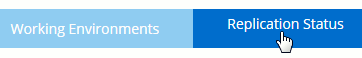
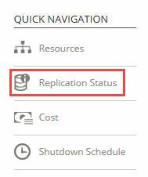
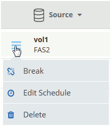

Go to the docs for the latest release.
Replicating data to and from the cloud
Contributors
 Download PDF of this page
Download PDF of this page
You can replicate data between working environments by choosing a one-time data replication for data transfer, or a recurring schedule for disaster recovery or long-term retention.
Cloud Manager simplifies data replication between volumes on separate systems using SnapMirror and SnapVault technologies. You simply need to identify the source volume and the destination volume, and then choose a replication policy and schedule. Cloud Manager purchases the required disks, configures relationships, applies the replication policy, and then initiates the baseline transfer between volumes.
| The baseline transfer includes a full copy of the source data. Subsequent transfers contain differential copies of the source data. |
Choosing a replication policy
A replication policy defines how the storage system replicates data from a source volume to a destination volume. You must choose a replication policy when you set up data replication in Cloud Manager.
What replication policies do
The ONTAP operating system automatically creates backups called Snapshot copies. A Snapshot copy is a read-only image of a volume that captures the state of the file system at a point in time.
When you replicate data between systems, you replicate Snapshot copies from a source volume to a destination volume. A replication policy specifies which Snapshot copies to replicate from the source volume to the destination volume.
| Replication policies are also referred to as protection policies because they are powered by SnapMirror and SnapVault technologies, which provide disaster recovery protection and disk-to-disk backup and recovery. |
The following image shows the relationship between Snapshot copies and replication policies:

Types of replication policies
There are three types of replication policies:
-
A Mirror policy replicates newly created Snapshot copies to a destination volume.
You can use these Snapshot copies to protect the source volume in preparation for disaster recovery or for one-time data replication. You can activate the destination volume for data access at any time.
-
A Backup policy replicates specific Snapshot copies to a destination volume and typically retains them for a longer period of time than you would on the source volume.
You can restore data from these Snapshot copies when data is corrupted or lost, and retain them for standards compliance and other governance-related purposes.
-
A Mirror and Backup policy provides both disaster recovery and long-term retention.
Each system includes a default Mirror and Backup policy, which works well for many situations. If you find that you need custom policies, you can create your own using System Manager.
The following images show the difference between the Mirror and Backup policies. A Mirror policy mirrors the Snapshot copies available on the source volume.

A Backup policy typically retains Snapshot copies longer than they are retained on the source volume:

How Backup policies work
Unlike Mirror policies, Backup (SnapVault) policies replicate specific Snapshot copies to a destination volume. It is important to understand how Backup policies work if you want to use your own policies instead of the default policies.
Understanding the relationship between Snapshot copy labels and Backup policies
A Snapshot policy defines how the system creates Snapshot copies of volumes. The policy specifies when to create the Snapshot copies, how many copies to retain, and how to label them. For example, a system might create one Snapshot copy every day at 12:10 a.m., retain the two most recent copies, and label them "daily".
A Backup policy includes rules that specify which labeled Snapshot copies to replicate to a destination volume and how many copies to retain. The labels defined in a Backup policy must match one or more labels defined in a Snapshot policy. Otherwise, the system cannot replicate any Snapshot copies.
For example, a Backup policy that includes the labels "daily" and "weekly" results in replication of Snapshot copies that include only those labels. No other Snapshot copies are replicated, as shown in the following image:
Default policies and custom policies
The default Snapshot policy creates hourly, daily, and weekly Snapshot copies, retaining six hourly, two daily, and two weekly Snapshot copies.
You can easily use a default Backup policy with the default Snapshot policy. The default Backup policies replicate daily and weekly Snapshot copies, retaining seven daily and 52 weekly Snapshot copies.
If you create custom policies, the labels defined by those policies must match. You can create custom policies using System Manager.
Data replication requirements
Before you can replicate data, you should confirm that specific requirements are met for both Cloud Volumes ONTAP systems and ONTAP clusters.
- Version requirements
-
You should verify that the source and destination volumes are running compatible ONTAP versions before replicating data. For details, see the Data Protection Power Guide.
- Requirements specific to Cloud Volumes ONTAP
-
-
The instance’s security group must include the required inbound and outbound rules: specifically, rules for ICMP and ports 10000, 11104, and 11105.
These rules are included in the predefined security group.
-
To replicate data between two Cloud Volumes ONTAP systems in different subnets, the subnets must be routed together (this is the default setting).
-
To replicate data between a Cloud Volumes ONTAP system in AWS and a system in Azure, you must have a VPN connection between the AWS VPC and the Azure VNet.
-
- Requirements specific to ONTAP clusters
-
-
An active SnapMirror license must be installed.
-
If the cluster is on your premises, you should have a connection from your corporate network to AWS or Azure, which is typically a VPN connection.
-
ONTAP clusters must meet additional subnet, port, firewall, and cluster requirements.
For details, see the Cluster and SVM Peering Express Guide for your version of ONTAP.
-
Replicating data between systems
You can replicate data between Cloud Volumes ONTAP systems and ONTAP clusters by choosing a one-time data replication, which can help you move data to and from the cloud, or a recurring schedule, which can help with disaster recovery or long-term retention.
Cloud Manager supports simple, fanout, and cascade data protection configurations:
-
In a simple configuration, replication occurs from volume A to volume B.
-
In a fanout configuration, replication occurs from volume A to multiple destinations.
-
In a cascade configuration, replication occurs from volume A to volume B and from volume B to volume C.
You can configure fanout and cascade configurations in Cloud Manager by setting up multiple data replications between systems. For example, by replicating a volume from system A to system B and then by replicating the same volume from system B to system C.
-
On the Working Environments page, select the working environment that contains the source volume, and then drag it to the working environment to which you want to replicate the volume:

-
If the Source and Destination Peering Setup pages appear, select all of the intercluster LIFs for the cluster peer relationship.
The intercluster network should be configured so that cluster peers have pair-wise full-mesh connectivity, which means that each pair of clusters in a cluster peer relationship has connectivity among all of their intercluster LIFs.
These pages appear if an ONTAP cluster that has multiple LIFs is the source or destination.
-
On the Source Volume Selection page, select the volume that you want to replicate.
-
On the Destination Volume Name and Tiering page, specify the destination volume name, choose an underlying disk type, change any of the advanced options, and then click Continue.
If the destination is an ONTAP cluster, you must also specify the destination SVM and aggregate.
-
On the Max Transfer Rate page, specify the maximum rate (in megabytes per second) at which data can be transferred.
-
On the Replication Policy page, choose one of the default policies or click Additional Policies, and then select one of the advanced policies.
For help, see Choosing a replication policy.
If you choose a custom backup (SnapVault) policy, the labels associated with the policy must match the labels of the Snapshot copies on the source volume. For more information, see How backup policies work.
-
On the Schedule page, choose a one-time copy or a recurring schedule.
Several default schedules are available. If you want a different schedule, you must create a new schedule on the destination cluster using System Manager.
-
On the Review page, review your selections, and then click Go.
Cloud Manager starts the data replication process. You can view details about the replication in the Replication Status page.
Managing data replication schedules and relationships
After you set up data replication between two systems, you can manage the data replication schedule and relationship from Cloud Manager.
-
On the Working Environments page, view the replication status for all assigned working environments in the tenant or for a specific working environment:
Option Action All assigned working environments in the tenant
Click Replication Status from the navigation bar.

A specific working environment
Select the working environment, and then click Replication Status.

-
Review the status of the data replication relationships to verify that they are healthy.
If the Status of a relationship is idle and the Mirror State is uninitialized, you must initialize the relationship from the destination system for the data replication to occur according to the defined schedule. You can initialize the relationship by using System Manager or the command-line interface (CLI). These states can appear when the destination system fails and then comes back online. -
Select the menu icon next to the source volume, and then choose one of the available actions.

The following table describes the available actions:
Action Description Break
Breaks the relationship between the source and destination volumes, and activates the destination volume for data access.
This option is typically used when the source volume cannot serve data due to events such as data corruption, accidental deletion, or an offline state.
For information about configuring a destination volume for data access and reactivating a source volume, see the ONTAP 9 Volume Disaster Recovery Express Guide.Resync
Reestablishes a broken relationship between volumes and resumes data replication according to the defined schedule.
When you resynchronize the volumes, the contents on the destination volume are overwritten by the contents on the source volume. To perform a reverse resync, which resynchronizes the data from the destination volume to the source volume, see the ONTAP 9 Volume Disaster Recovery Express Guide.
Reverse Resync
Reverses the roles of the source and destination volumes. Contents from the original source volume are overwritten by contents of the destination volume. This is helpful when you want to reactivate a source volume that went offline.
Any data written to the original source volume between the last data replication and the time that the source volume was disabled is not preserved.Edit Schedule
Enables you to choose a different schedule for data replication.
Policy Info
Shows you the protection policy assigned to the data replication relationship.
Edit Max Transfer Rate
Enables you to edit the maximum rate (in kilobytes per second) at which data can be transferred.
Delete
Deletes the data protection relationship between the source and destination volumes, which means that data replication no longer occurs between the volumes. This action does not activate the destination volume for data access. This action also deletes the cluster peer relationship and the storage virtual machine (SVM) peer relationship, if there are no other data protection relationships between the systems.
After you select an action, Cloud Manager updates the relationship or schedule.
 Edit on GitHub
Edit on GitHub